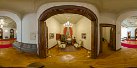
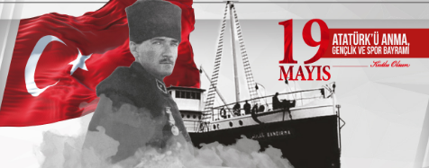
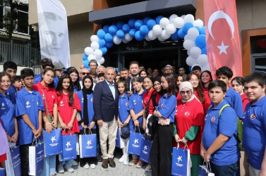

Duyurular ve Haberler
Küçükçekmece Belediyesi Gençlik Merkezi'ndeki en güncel etkinlikler, yeni açılan atölyeler ve önemli duyurulardan haberdar olun.

Küçükçekmeceli Gençler İstanbul'u Ücretsiz Geziyor
Belediyemiz tarafından düzenlenen ücretsiz gezilerle, 15-30 yaş arası gençlerimiz İstanbul'un simgesi haline gelen önemli tarihi noktaları keşfetme fırsatı yakalıyor. Kayıtlar merkezimizde devam etmektedir.

23 Nisan Çocuk ve Öğrenci Şenliği Başlıyor
Ulusal Egemenlik ve Çocuk Bayramı kapsamında, merkezimizde tiyatro gösterimleri, yarışmalar ve sürpriz eğlencelerle dolu şenliğimize tüm gençlerimizi ve çocuklarımızı bekliyoruz.

Geleceğin Mutfak Şeflerini Yetiştiriyoruz!
Küçükçekmece Belediyesi Gençlik Gelişim Merkezi ev sahipliğinde devam eden gastronomi ve mutfak sanatları kurslarımız için yeni grup kayıtlarımız başlamıştır.
Bilişim Atölyesi: Robot Yarışları Düzenleniyor
Merkezimiz bünyesindeki bilişim sınıflarında eğitim alan öğrencilerimizin kendi tasarladıkları projelerin sergileneceği ve yarışacağı teknoloji şöleni başlıyor.

Fitness ve Pilates Salonlarımız Tam Kapasite Hizmette
Gençlik Merkezimize kayıt yaptıran üyelerimiz, uzman antrenörler eşliğinde modern spor salonu, fitness ve aletli pilates hizmetlerimizden ücretsiz bir şekilde yararlanabilmektedir.

Siber Güvenlik ve Network Laboratuvarı Kuruldu
Hack saldırıları eğitimi, ağ izleme ve siber güvenlik donanımlarıyla zenginleştirilen yeni bilişim sınıfımız, geleceğin siber uzmanlarını yetiştirmek üzere faaliyete geçmiştir.